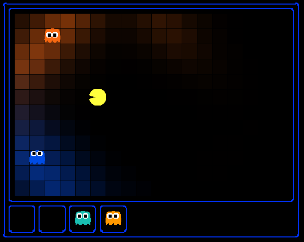

I can hear you, ghost.
Running won't save you from my
Particle filter!
Pacman spends his life running from ghosts, but things were not always so. Legend has it that many years ago, Pacman's great grandfather Grandpac learned to hunt ghosts for sport. However, he was blinded by his power and could only track ghosts by their banging and clanging.
In this project, you will design Pacman agents that use sensors to locate and eat invisible ghosts. You'll advance from locating single, stationary ghosts to hunting moving ghosts.
The code for this project contains the following files, available as a zip archive.
bustersAgents.py |
Agents for playing the Ghostbusters variant of Pacman. |
inference.py |
Code for tracking ghosts over time using their sounds. |
busters.py |
The main entry to Ghostbusters (replacing Pacman.py) |
bustersGhostAgents.py |
New ghost agents for Ghostbusters |
distanceCalculator.py |
Computes maze distances |
game.py |
Inner workings and helper classes for Pacman |
ghostAgents.py |
Agents to control ghosts |
graphicsDisplay.py |
Graphics for Pacman |
graphicsUtils.py |
Support for Pacman graphics |
keyboardAgents.py |
Keyboard interfaces to control Pacman |
layout.py |
Code for reading layout files and storing their contents |
util.py |
Utility functions |
What to submit: You will fill in and then submit portions of bustersAgents.py and
inference.py.
Please do not change the other files in this distribution or submit any of the original files other than inference.py and bustersAgents.py.
As always, use turnin to submit your work. Each team should
submit only one copy of the relevant files. In addition, please send me
an email with the following information:
Evaluation: Your code will be autograded for technical correctness. Please do not change the names of any provided functions or classes within the code, or you will wreak havoc on the autograder. However, the correctness of your implementation -- not the autograder's judgements -- will be the final judge of your score.
The goal for this assignment is to hunt down scared but invisible ghosts. Pacman, ever resourceful, is equipped with sonar (ears) that provides noisy readings of the Manhattan distance to each ghost. The game ends when Pacman has eaten all the ghosts. To start, try playing a game yourself using the keyboard.
python busters.py
The blocks of color indicate where each ghost could possibly be, given the noisy distance readings provided to Pacman. The noisy distances at the bottom of the display are always non-negative, and always within 7 of the true distance. The probability of a distance reading decreases exponentially with its difference from the true distance.
Your primary task in this project is to implement inference to track the ghosts. A crude form of inference is implemented for you by default: all squares in which a ghost could possibly be are shaded by the color of the ghost.
python busters.py -k 1
Naturally, you want a better estimate of the ghost's position. You will start by locating a
single, stationary ghost using multiple noisy distance readings. The default
BustersKeyboardAgent in bustersAgents.py uses the
ExactInference module in inference.py to track ghosts.
Hint:As you're debugging, you'll find it useful to actually see where the ghost is. Use option -s, when running Pacman
python busters.py -s -k 1
Question 1 (3 points) Update the observe method in
ExactInference class of inference.py to correctly update the agent's
belief distribution over ghost positions.
When complete, you should be able to accurately locate a
ghost by circling it.
python busters.py -s -k 1 -g StationaryGhost
Because the default StationaryGhost ghost agents don't move,
you can track each one separately. The default BustersKeyboardAgent is set up to
do this for you. Hence, you should be able to locate multiple stationary ghosts simultaneously.
Encircling the ghosts should give you precise distributions over the ghosts' locations.
python busters.py -s -g StationaryGhost
Note: your busters agents have a separate inference module for each ghost they are tracking.
That's why if you print an observation inside the observe function, you'll only see a
single number even though there may be multiple ghosts on the board.
Hints:
initializeUniformly). After receiving a reading, the
observe function is called, which must update the belief at every
position.
noisyDistance, emissionModel, and
PacmanPosition (in the observe function) to get
started.
util.Counter objects (like dictionaries) in a
field called self.beliefs, which you should update.
ExactInference is self.beliefs.
Ghosts don't hold still forever. Fortunately, your agent has access to the action distribution
for any GhostAgent. Your next task is to use the ghost's move distribution to update
your agent's beliefs when time elapses and ghosts move.
Question 2 (4 points) Fill in the elapseTime method in
ExactInference to correctly update the agent's belief distribution over the ghost's
position when the ghost moves. When complete, you should be able to accurately locate moving ghosts,
but some uncertainty will always remain about a ghost's position as it moves. To test it out, you can
use the DirectionalGhost ghost agent, which causes the ghosts to move in a somewhat
predictable fashion. If you don't include -g DirectionalGhost, then the ghost will
move randomly, which will be harder to track, though it should still be possible.
python busters.py -s -k 1 -g DirectionalGhost
python busters.py -s -k 1
Hints:
gameState, appears in the comments of
ExactInference.elapseTime in inference.py.
DirectionalGhost is easier to track because it is more predictable.
After running away from one for a while, your agent should have a good idea where it is.
Now that Pacman can track ghosts, try playing without peeking at the ghost locations. Beliefs about each ghost will be overlaid on the screen. The game should be challenging, but not impossible.
python busters.py -l bigHunt
Now, Pacman is ready to hunt down ghosts on his own. You will implement a simple greedy hunting strategy, where Pacman assumes that each ghost is in its most likely position according to its beliefs, then moves toward the closest ghost.
Question 3 (4 points) Implement the chooseAction method in GreedyBustersAgent in bustersAgents.py. Your agent should first find the most likely position of each remaining (uncaptured) ghost, then choose an action that minimizes the distance to the closest ghost. If correctly implemented, your
agent should win smallHunt with a score greater than 700 at least
8 out of 10 times. Note: the autograder will check the
correctness of your inference directly, not the outcome of games, but it's a reasonable sanity check.
python busters.py -p GreedyBustersAgent -l smallHuntHints:
chooseAction provide you with useful method calls for computing maze distance and successor positions.
Approximate Q-Learning Extra Credit (4 points) A number of you were eager to improve on your approximate q-learning agents from the previous assignment. Because Project 4 (Ghostbusters) is shorter than most, this is a good opportunity to do that -- and to earn extra credit for it.
As you all saw, the features extracted by SimpleExtractor allowed Pacman to learn how to
play pretty well. After training, he typically ate all the food and avoided ghosts, winning on
the mediumClassic layout with scores a bit over 1300. As many of you also
noted, Pacman played quite conservatively. He didn't go after capsules or scared ghosts.
For extra credit, modify the getFeatures method in SimpleExtractor
in featureExtractors.py to return a new and improved set of features with which
Pacman can learn to play more aggressively.
Grading: I will run my approximate q-learning agent with your features on the
mediumClassic layout 10 times after training on 50 games.
python pacman.py -p ApproximateQAgent -a extractor=SimpleExtractor -x 50 -n 60 -l mediumClassic
I will assign extra credit points in the following way:
If you choose to do the extra credit, please turn in the file featureExtractors.py
with your Ghostbusters code.